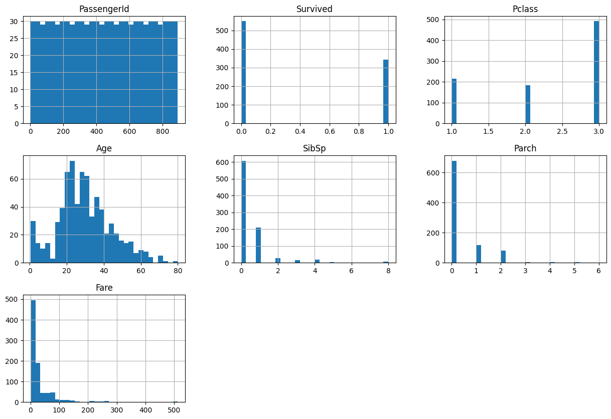
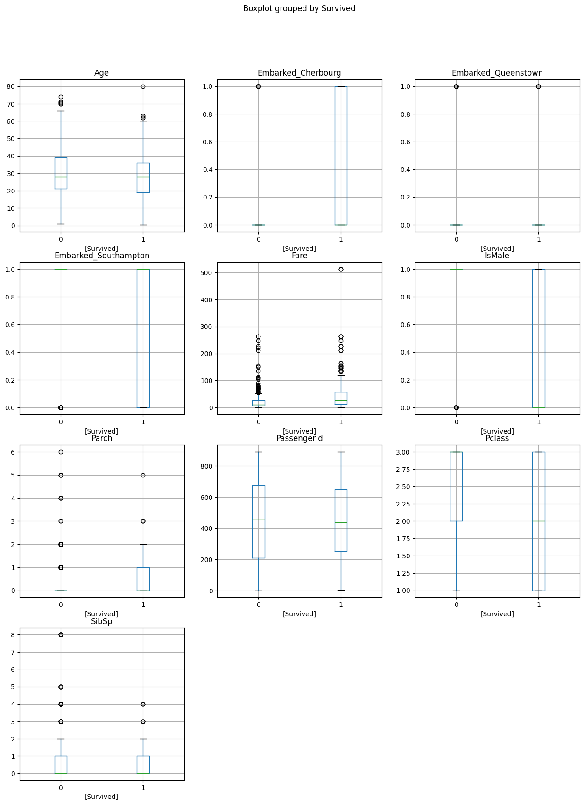
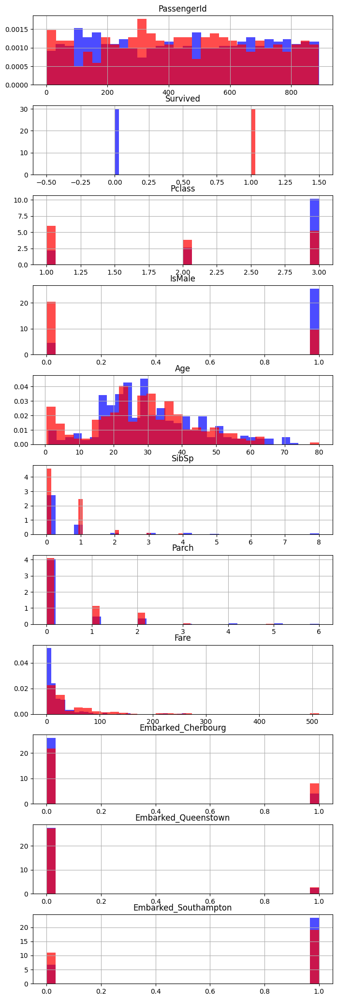
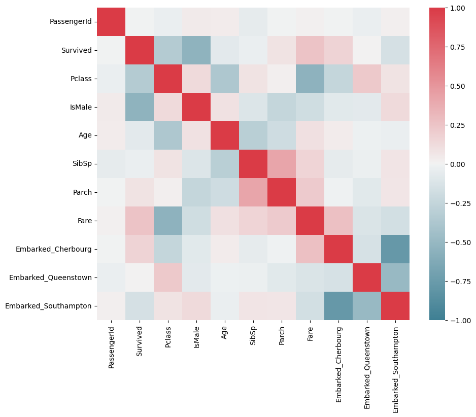

import pandas as pd
import matplotlib.pyplot as plt
import numpy as np
import seaborn as sns24 Data Preprocessing and Exploratory Data Analysis (Titanic Dataset)
When working with any new dataset, it’s a good idea to try to explore it to understand the values in it and any obvious patterns.
Here, we will also process the dataset to make it usable for machine learning.
To begin, let’s import some standard data manipulation and visualisation libraries.
Unlike a lot of our previous notebooks, we’re going to work with the raw titanic dataset so we can explore the ways in which we can prepare the notebook.
We will undertake some additional cleaning, so the final result will not look exactly like the dataset we are used to from other examples.
try:
data = pd.read_csv("data/raw_data.csv")
except FileNotFoundError:
# Download raw data:
address = 'https://raw.githubusercontent.com/MichaelAllen1966/' + \
'1804_python_healthcare/master/titanic/data/train.csv'
data = pd.read_csv(address)
# Create a data subfolder if one does not already exist
import os
data_directory ='./data/'
if not os.path.exists(data_directory):
os.makedirs(data_directory)
# Save data
data.to_csv(data_directory + 'raw_data.csv', index=False)24.1 Initial exploration
Let’s first check how many values we have.
len(data)891View the first five rows.
data.head()| PassengerId | Survived | Pclass | Name | Sex | Age | SibSp | Parch | Ticket | Fare | Cabin | Embarked | |
|---|---|---|---|---|---|---|---|---|---|---|---|---|
| 0 | 1 | 0 | 3 | Braund, Mr. Owen Harris | male | 22.0 | 1 | 0 | A/5 21171 | 7.2500 | NaN | S |
| 1 | 2 | 1 | 1 | Cumings, Mrs. John Bradley (Florence Briggs Th... | female | 38.0 | 1 | 0 | PC 17599 | 71.2833 | C85 | C |
| 2 | 3 | 1 | 3 | Heikkinen, Miss. Laina | female | 26.0 | 0 | 0 | STON/O2. 3101282 | 7.9250 | NaN | S |
| 3 | 4 | 1 | 1 | Futrelle, Mrs. Jacques Heath (Lily May Peel) | female | 35.0 | 1 | 0 | 113803 | 53.1000 | C123 | S |
| 4 | 5 | 0 | 3 | Allen, Mr. William Henry | male | 35.0 | 0 | 0 | 373450 | 8.0500 | NaN | S |
Check the ranges and distributions of the values.
data.describe().round(3)| PassengerId | Survived | Pclass | Age | SibSp | Parch | Fare | |
|---|---|---|---|---|---|---|---|
| count | 891.000 | 891.000 | 891.000 | 714.000 | 891.000 | 891.000 | 891.000 |
| mean | 446.000 | 0.384 | 2.309 | 29.699 | 0.523 | 0.382 | 32.204 |
| std | 257.354 | 0.487 | 0.836 | 14.526 | 1.103 | 0.806 | 49.693 |
| min | 1.000 | 0.000 | 1.000 | 0.420 | 0.000 | 0.000 | 0.000 |
| 25% | 223.500 | 0.000 | 2.000 | 20.125 | 0.000 | 0.000 | 7.910 |
| 50% | 446.000 | 0.000 | 3.000 | 28.000 | 0.000 | 0.000 | 14.454 |
| 75% | 668.500 | 1.000 | 3.000 | 38.000 | 1.000 | 0.000 | 31.000 |
| max | 891.000 | 1.000 | 3.000 | 80.000 | 8.000 | 6.000 | 512.329 |
We can use the following code to quickly view histograms for every column in the dataset.
data.hist(bins=30, figsize=(15, 10))array([[<Axes: title={'center': 'PassengerId'}>,
<Axes: title={'center': 'Survived'}>,
<Axes: title={'center': 'Pclass'}>],
[<Axes: title={'center': 'Age'}>,
<Axes: title={'center': 'SibSp'}>,
<Axes: title={'center': 'Parch'}>],
[<Axes: title={'center': 'Fare'}>, <Axes: >, <Axes: >]],
dtype=object)
Get a full list of column names.
data.columnsIndex(['PassengerId', 'Survived', 'Pclass', 'Name', 'Sex', 'Age', 'SibSp',
'Parch', 'Ticket', 'Fare', 'Cabin', 'Embarked'],
dtype='object')24.1.1 Check for missing data
This snippet gives us a quick overview of which columns have missing data and how much is missing.
pd.DataFrame(
data.isna().mean().round(4),
columns=["Percentage of Values Missing"]
)| Percentage of Values Missing | |
|---|---|
| PassengerId | 0.0000 |
| Survived | 0.0000 |
| Pclass | 0.0000 |
| Name | 0.0000 |
| Sex | 0.0000 |
| Age | 0.1987 |
| SibSp | 0.0000 |
| Parch | 0.0000 |
| Ticket | 0.0000 |
| Fare | 0.0000 |
| Cabin | 0.7710 |
| Embarked | 0.0022 |
25 Making Column Contents Clearer
In some cases, the contents of the column isn’t very intuitive and is going to result in us spending a lot of time looking up what the values mean.
For example, the embarked column isn’t very clear.
data.Embarked0 S
1 C
2 S
3 S
4 S
..
886 S
887 S
888 S
889 C
890 Q
Name: Embarked, Length: 891, dtype: objectLet’s first check how many distinct values we have.
When we grab a single column from a pandas dataframe like data['Embarked'] or data.Embarked this returns a pandas series. The series object has a method called unique() we can use.
data.Embarked.unique()array(['S', 'C', 'Q', nan], dtype=object)Let’s now create a lookup dictionary for these values.
embarked_lookup = {
'S': 'Southampton',
'C': 'Cherbourg',
'Q': 'Queenstown'
}Finally, let’s replace these values in the dataframe, overwriting our original embarked column.
data['Embarked'] = data['Embarked'].apply(lambda row_value: embarked_lookup.get(row_value))We can then view the counts for this column.
data['Embarked'].value_counts()Southampton 644
Cherbourg 168
Queenstown 77
Name: Embarked, dtype: int6426 One-hot encoding
Machine learning models - with a few exceptions like catboost - generally can’t cope with columns where the columns refer to a series of possible categories.
We have to convert these to a wider format - each category becomes its own column, and will have a 1 in the row where the column name matches the original category, and a 0 in all other columns.
While there is an sklearn method for this, pandas has a nice method that’s a bit more intuitive, so we’ll use that here.
# Create a one-hot encoded representation of the data
one_hot = pd.get_dummies(data['Embarked'], prefix='Embarked').astype('int')
# Drop the column as it is now encoded
data = data.drop('Embarked', axis = 1)
# Join the encoded df
# As we have not specified, in this case it will join on the only common
# element of the two dataframes - the index
data = data.join(one_hot)
data| PassengerId | Survived | Pclass | Name | Sex | Age | SibSp | Parch | Ticket | Fare | Cabin | Embarked_Cherbourg | Embarked_Queenstown | Embarked_Southampton | |
|---|---|---|---|---|---|---|---|---|---|---|---|---|---|---|
| 0 | 1 | 0 | 3 | Braund, Mr. Owen Harris | male | 22.0 | 1 | 0 | A/5 21171 | 7.2500 | NaN | 0 | 0 | 1 |
| 1 | 2 | 1 | 1 | Cumings, Mrs. John Bradley (Florence Briggs Th... | female | 38.0 | 1 | 0 | PC 17599 | 71.2833 | C85 | 1 | 0 | 0 |
| 2 | 3 | 1 | 3 | Heikkinen, Miss. Laina | female | 26.0 | 0 | 0 | STON/O2. 3101282 | 7.9250 | NaN | 0 | 0 | 1 |
| 3 | 4 | 1 | 1 | Futrelle, Mrs. Jacques Heath (Lily May Peel) | female | 35.0 | 1 | 0 | 113803 | 53.1000 | C123 | 0 | 0 | 1 |
| 4 | 5 | 0 | 3 | Allen, Mr. William Henry | male | 35.0 | 0 | 0 | 373450 | 8.0500 | NaN | 0 | 0 | 1 |
| ... | ... | ... | ... | ... | ... | ... | ... | ... | ... | ... | ... | ... | ... | ... |
| 886 | 887 | 0 | 2 | Montvila, Rev. Juozas | male | 27.0 | 0 | 0 | 211536 | 13.0000 | NaN | 0 | 0 | 1 |
| 887 | 888 | 1 | 1 | Graham, Miss. Margaret Edith | female | 19.0 | 0 | 0 | 112053 | 30.0000 | B42 | 0 | 0 | 1 |
| 888 | 889 | 0 | 3 | Johnston, Miss. Catherine Helen "Carrie" | female | NaN | 1 | 2 | W./C. 6607 | 23.4500 | NaN | 0 | 0 | 1 |
| 889 | 890 | 1 | 1 | Behr, Mr. Karl Howell | male | 26.0 | 0 | 0 | 111369 | 30.0000 | C148 | 1 | 0 | 0 |
| 890 | 891 | 0 | 3 | Dooley, Mr. Patrick | male | 32.0 | 0 | 0 | 370376 | 7.7500 | NaN | 0 | 1 | 0 |
891 rows × 14 columns
27 Dichotomous Columns
When there are only two values (a ‘dichotomous’ column), we still need to convert this to a different representation for machine learning.
Rather than one-hot encoding, it makes more sense to turn it into a column where one value is represented by 0, and the other value is represented by 1. For example, here we have a Sex column that only codes sex as ‘male’ or ‘female’ - we can choose one of these to be 0, and the other to be 1.
To do this, we could create a lookup (like we did for Embarked), or we could use the simple code below.
data['Sex'].replace('male', 1, inplace=True)
data['Sex'].replace('female', 0, inplace=True)
data.head()| PassengerId | Survived | Pclass | Name | Sex | Age | SibSp | Parch | Ticket | Fare | Cabin | Embarked_Cherbourg | Embarked_Queenstown | Embarked_Southampton | |
|---|---|---|---|---|---|---|---|---|---|---|---|---|---|---|
| 0 | 1 | 0 | 3 | Braund, Mr. Owen Harris | 1 | 22.0 | 1 | 0 | A/5 21171 | 7.2500 | NaN | 0 | 0 | 1 |
| 1 | 2 | 1 | 1 | Cumings, Mrs. John Bradley (Florence Briggs Th... | 0 | 38.0 | 1 | 0 | PC 17599 | 71.2833 | C85 | 1 | 0 | 0 |
| 2 | 3 | 1 | 3 | Heikkinen, Miss. Laina | 0 | 26.0 | 0 | 0 | STON/O2. 3101282 | 7.9250 | NaN | 0 | 0 | 1 |
| 3 | 4 | 1 | 1 | Futrelle, Mrs. Jacques Heath (Lily May Peel) | 0 | 35.0 | 1 | 0 | 113803 | 53.1000 | C123 | 0 | 0 | 1 |
| 4 | 5 | 0 | 3 | Allen, Mr. William Henry | 1 | 35.0 | 0 | 0 | 373450 | 8.0500 | NaN | 0 | 0 | 1 |
We could now make this column clearer to interpret without a data dictionary by changing its name.
data = data.rename(columns={'Sex': 'IsMale'})
data.head()| PassengerId | Survived | Pclass | Name | IsMale | Age | SibSp | Parch | Ticket | Fare | Cabin | Embarked_Cherbourg | Embarked_Queenstown | Embarked_Southampton | |
|---|---|---|---|---|---|---|---|---|---|---|---|---|---|---|
| 0 | 1 | 0 | 3 | Braund, Mr. Owen Harris | 1 | 22.0 | 1 | 0 | A/5 21171 | 7.2500 | NaN | 0 | 0 | 1 |
| 1 | 2 | 1 | 1 | Cumings, Mrs. John Bradley (Florence Briggs Th... | 0 | 38.0 | 1 | 0 | PC 17599 | 71.2833 | C85 | 1 | 0 | 0 |
| 2 | 3 | 1 | 3 | Heikkinen, Miss. Laina | 0 | 26.0 | 0 | 0 | STON/O2. 3101282 | 7.9250 | NaN | 0 | 0 | 1 |
| 3 | 4 | 1 | 1 | Futrelle, Mrs. Jacques Heath (Lily May Peel) | 0 | 35.0 | 1 | 0 | 113803 | 53.1000 | C123 | 0 | 0 | 1 |
| 4 | 5 | 0 | 3 | Allen, Mr. William Henry | 1 | 35.0 | 0 | 0 | 373450 | 8.0500 | NaN | 0 | 0 | 1 |
28 Imputation
If we were using a model that requires missing values to be dealt with, or we wanted more control over how missing values are treated, we could use an imputation method.
In this example we’re just using XGBoost, which can handle missing values natively, so we will skip this step for now.
You can look at the notebook missing_data_imputation.ipynb to find out more about imputation methods.
29 Exploratory Data Analysis (EDA)
Before we get too far into modelling this, it’s a good idea to develop a bit of an understanding of our columns and the simple patterns in our dataset.
29.1 Exploring Simple Patterns
Let’s first just look at average values for each column depending on whether people survived or not.
Think about how you’d interpret this for binary columns like ‘IsMale’ and ‘Embarked_Cherbourg’.
data.groupby('Survived').mean(numeric_only=True).round(4)| PassengerId | Pclass | IsMale | Age | SibSp | Parch | Fare | Embarked_Cherbourg | Embarked_Queenstown | Embarked_Southampton | |
|---|---|---|---|---|---|---|---|---|---|---|
| Survived | ||||||||||
| 0 | 447.0164 | 2.5319 | 0.8525 | 30.6262 | 0.5537 | 0.3297 | 22.1179 | 0.1366 | 0.0856 | 0.7778 |
| 1 | 444.3684 | 1.9503 | 0.3187 | 28.3437 | 0.4737 | 0.4649 | 48.3954 | 0.2719 | 0.0877 | 0.6345 |
We can visualise the differences in distributions across these groups using the pandas boxplot method.
We end up with one plot per column, with two boxplots for each column - one for those who died on the left of each plot, and one for those who survived on the right.
They’re not that informative where we have binary columns, unfortunately!
data.boxplot(
by='Survived', # Column to segregate by
figsize = (15, 20), # adjust overall size of output figure
sharey=False, # Allows each variable to be plotted on its own scale
sharex=False # Not strictly necessary but a nice way to get the 0/1 labels on every plot
)array([[<Axes: title={'center': 'Age'}, xlabel='[Survived]'>,
<Axes: title={'center': 'Embarked_Cherbourg'}, xlabel='[Survived]'>,
<Axes: title={'center': 'Embarked_Queenstown'}, xlabel='[Survived]'>],
[<Axes: title={'center': 'Embarked_Southampton'}, xlabel='[Survived]'>,
<Axes: title={'center': 'Fare'}, xlabel='[Survived]'>,
<Axes: title={'center': 'IsMale'}, xlabel='[Survived]'>],
[<Axes: title={'center': 'Parch'}, xlabel='[Survived]'>,
<Axes: title={'center': 'PassengerId'}, xlabel='[Survived]'>,
<Axes: title={'center': 'Pclass'}, xlabel='[Survived]'>],
[<Axes: title={'center': 'SibSp'}, xlabel='[Survived]'>, <Axes: >,
<Axes: >]], dtype=object)
We can’t use the pandas .hist() column with the ‘by’ parameter as it plots every column on the same plot! So we’ll create the plot we want by running the hist command on two separate filtered dataframes - one containing those who survived and one containing those who didn’t.
fig, axs = plt.subplots(11,1, figsize=(8, 26))
data[data['Survived'] == 0].hist(bins=30, color='blue', alpha=0.7, density=True, ax=axs)
data[data['Survived'] == 1].hist(bins=30, color='red', alpha=0.7, density=True, ax=axs)array([<Axes: title={'center': 'PassengerId'}>,
<Axes: title={'center': 'Survived'}>,
<Axes: title={'center': 'Pclass'}>,
<Axes: title={'center': 'IsMale'}>,
<Axes: title={'center': 'Age'}>, <Axes: title={'center': 'SibSp'}>,
<Axes: title={'center': 'Parch'}>,
<Axes: title={'center': 'Fare'}>,
<Axes: title={'center': 'Embarked_Cherbourg'}>,
<Axes: title={'center': 'Embarked_Queenstown'}>,
<Axes: title={'center': 'Embarked_Southampton'}>], dtype=object)
29.1.1 Look at survival by different groupings
By using the pandas groupby method along with functions like mean, we can start to explore the % of people in different categories who survived.
Let’s first quickly remind ourselves of what the ‘survived’ column looks like.
data['Survived']0 0
1 1
2 1
3 1
4 0
..
886 0
887 1
888 0
889 1
890 0
Name: Survived, Length: 891, dtype: int64As it’s a series of 1’s and 0’s, taking the mean (adding up the values and dividing by the number of values) gives us the proportion of people who survived.
Let’s start by grouping by sex and seeing who survived.
data.groupby('IsMale')['Survived'].mean()IsMale
0 0.742038
1 0.188908
Name: Survived, dtype: float64We can interpret this as 74.2% of women surviving, and 18.8% of men surviving.
Let’s try with a different grouping - does it work where there are multiple categories?
We can try tidying it up a bit too.
(data.groupby('Pclass')['Survived'].mean()*100).round(2)Pclass
1 62.96
2 47.28
3 24.24
Name: Survived, dtype: float64Yes! It does work where there are multiple options within a category.
Let’s take it further - by passing in a list of columns to group by, we can explore multiple layers of detail.
Let’s turn the output into a dataframe while we’re at it.
pd.DataFrame(
data.groupby(['Pclass', 'IsMale'])['Survived'].mean().round(4)
)| Survived | ||
|---|---|---|
| Pclass | IsMale | |
| 1 | 0 | 0.9681 |
| 1 | 0.3689 | |
| 2 | 0 | 0.9211 |
| 1 | 0.1574 | |
| 3 | 0 | 0.5000 |
| 1 | 0.1354 |
For some instances where we think we might have a low number of people belonging to each column and want to check this, we can use the .describe() method instead of the .mean() and manually pull back the columns we are interested in.
Here, we can see that very few people were travelling with 3 or more parents or children so we might not place too much stock in the associated chances of survival.
data.groupby('Parch')['Survived'].describe()[['mean','count']].round(4)| mean | count | |
|---|---|---|
| Parch | ||
| 0 | 0.3437 | 678.0 |
| 1 | 0.5508 | 118.0 |
| 2 | 0.5000 | 80.0 |
| 3 | 0.6000 | 5.0 |
| 4 | 0.0000 | 4.0 |
| 5 | 0.2000 | 5.0 |
| 6 | 0.0000 | 1.0 |
For numeric columns, we can create a new grouping ourselves to investigate the differences.
under_18 = np.where(data['Age'] < 18 , 'Under 18', 'Over 18')
data.groupby(under_18)['Survived'].mean()Over 18 0.361183
Under 18 0.539823
Name: Survived, dtype: float64under_30 = np.where(data['Age'] < 30 , 'Under 30', 'Over 30')
data.groupby(under_30)['Survived'].mean()Over 30 0.366864
Under 30 0.406250
Name: Survived, dtype: float64We can use this new grouping together with a column from our dataframe.
data.groupby([under_18, 'IsMale'])['Survived'].mean() IsMale
Over 18 0 0.752896
1 0.165703
Under 18 0 0.690909
1 0.396552
Name: Survived, dtype: float64over_60 = np.where(data['Age'] >60 , 'Over 60', 'Under 60')
data.groupby([over_60, 'Pclass'])['Survived'].mean() Pclass
Over 60 1 0.214286
2 0.333333
3 0.200000
Under 60 1 0.658416
2 0.475138
3 0.242798
Name: Survived, dtype: float64In some cases, we may want to assign the results of that column back to our dataframe to use as a new bit of data. Let’s do that with a column that tells us whether someone is travelling with family.
data['TravellingWithFamily'] = np.where((data['SibSp'] + data['Parch']) >= 1 , 'Travelling with Family', 'Travelling Alone')
data.groupby('TravellingWithFamily')['Survived'].mean()TravellingWithFamily
Travelling Alone 0.303538
Travelling with Family 0.505650
Name: Survived, dtype: float64data.groupby(['IsMale', 'TravellingWithFamily'])['Survived'].mean()IsMale TravellingWithFamily
0 Travelling Alone 0.785714
Travelling with Family 0.712766
1 Travelling Alone 0.155718
Travelling with Family 0.271084
Name: Survived, dtype: float64data.groupby(['Pclass', 'TravellingWithFamily'])['Survived'].mean()Pclass TravellingWithFamily
1 Travelling Alone 0.532110
Travelling with Family 0.728972
2 Travelling Alone 0.346154
Travelling with Family 0.637500
3 Travelling Alone 0.212963
Travelling with Family 0.299401
Name: Survived, dtype: float6430 Investigate the individual predictive power of columns
30.1 Correlation
We can create a correlation matrix to look at associations between different columns and also between the column of interest (survived) and each column.
The diagonal shows a column’s correlation with itself, which will always be 1!
Red squares indicate a strong positive correlation between features - as one increases, the other increases.
Blue squares indicate a strong negative correlation - as one increases, the other decreases.
Paler squares indicate less strong correlations.
We use the seaborn (sns) library here instead of matplotlib (plt) as it has a really nice built-in correlation plot.
f, ax = plt.subplots(figsize=(10, 8))
corr = data.select_dtypes(['number']) .corr()
sns.heatmap(corr,
cmap=sns.diverging_palette(220, 10, as_cmap=True),
vmin=-1.0, vmax=1.0,
square=True, ax=ax)
30.2 Predictive Power
An interesting alternative to pure correlations may be the predictive power score.
However, this doesn’t work with pandas versions >2, which we have in our environment, so we won’t cover this today.
However, if you are interested, take a look at the repository: https://github.com/8080labs/ppscore
31 Further Data Preparation
31.1 Tidying up Column Names
If we don’t find the column names of a provided dataset very intuitive, we can tidy these up ourselves.
Let’s first remind ourselves of the names we have.
data.columnsIndex(['PassengerId', 'Survived', 'Pclass', 'Name', 'IsMale', 'Age', 'SibSp',
'Parch', 'Ticket', 'Fare', 'Cabin', 'Embarked_Cherbourg',
'Embarked_Queenstown', 'Embarked_Southampton', 'TravellingWithFamily'],
dtype='object')data = data.rename(columns={
'Parch': 'ParentsOrChildren',
'SibSp': 'SiblingsOrSpouses',
'Pclass': 'PClass'
}
)
data| PassengerId | Survived | PClass | Name | IsMale | Age | SiblingsOrSpouses | ParentsOrChildren | Ticket | Fare | Cabin | Embarked_Cherbourg | Embarked_Queenstown | Embarked_Southampton | TravellingWithFamily | |
|---|---|---|---|---|---|---|---|---|---|---|---|---|---|---|---|
| 0 | 1 | 0 | 3 | Braund, Mr. Owen Harris | 1 | 22.0 | 1 | 0 | A/5 21171 | 7.2500 | NaN | 0 | 0 | 1 | Travelling with Family |
| 1 | 2 | 1 | 1 | Cumings, Mrs. John Bradley (Florence Briggs Th... | 0 | 38.0 | 1 | 0 | PC 17599 | 71.2833 | C85 | 1 | 0 | 0 | Travelling with Family |
| 2 | 3 | 1 | 3 | Heikkinen, Miss. Laina | 0 | 26.0 | 0 | 0 | STON/O2. 3101282 | 7.9250 | NaN | 0 | 0 | 1 | Travelling Alone |
| 3 | 4 | 1 | 1 | Futrelle, Mrs. Jacques Heath (Lily May Peel) | 0 | 35.0 | 1 | 0 | 113803 | 53.1000 | C123 | 0 | 0 | 1 | Travelling with Family |
| 4 | 5 | 0 | 3 | Allen, Mr. William Henry | 1 | 35.0 | 0 | 0 | 373450 | 8.0500 | NaN | 0 | 0 | 1 | Travelling Alone |
| ... | ... | ... | ... | ... | ... | ... | ... | ... | ... | ... | ... | ... | ... | ... | ... |
| 886 | 887 | 0 | 2 | Montvila, Rev. Juozas | 1 | 27.0 | 0 | 0 | 211536 | 13.0000 | NaN | 0 | 0 | 1 | Travelling Alone |
| 887 | 888 | 1 | 1 | Graham, Miss. Margaret Edith | 0 | 19.0 | 0 | 0 | 112053 | 30.0000 | B42 | 0 | 0 | 1 | Travelling Alone |
| 888 | 889 | 0 | 3 | Johnston, Miss. Catherine Helen "Carrie" | 0 | NaN | 1 | 2 | W./C. 6607 | 23.4500 | NaN | 0 | 0 | 1 | Travelling with Family |
| 889 | 890 | 1 | 1 | Behr, Mr. Karl Howell | 1 | 26.0 | 0 | 0 | 111369 | 30.0000 | C148 | 1 | 0 | 0 | Travelling Alone |
| 890 | 891 | 0 | 3 | Dooley, Mr. Patrick | 1 | 32.0 | 0 | 0 | 370376 | 7.7500 | NaN | 0 | 1 | 0 | Travelling Alone |
891 rows × 15 columns
31.2 Getting rid of columns we won’t use and setting the datatype
We can drop ‘Name’, ‘Ticket’, ‘Cabin’ and ‘TravellingWithFamily’ here - though look at the feature_engineering notebook for how we could make better use of each of these!
For now, we’re just trying to create something that is similar - though slightly nicer to work with - than the processed dataset we’ve used.
data = data.drop(columns=['Name', 'Ticket', 'Cabin', 'TravellingWithFamily'])
data.head()| PassengerId | Survived | PClass | IsMale | Age | SiblingsOrSpouses | ParentsOrChildren | Fare | Embarked_Cherbourg | Embarked_Queenstown | Embarked_Southampton | |
|---|---|---|---|---|---|---|---|---|---|---|---|
| 0 | 1 | 0 | 3 | 1 | 22.0 | 1 | 0 | 7.2500 | 0 | 0 | 1 |
| 1 | 2 | 1 | 1 | 0 | 38.0 | 1 | 0 | 71.2833 | 1 | 0 | 0 |
| 2 | 3 | 1 | 3 | 0 | 26.0 | 0 | 0 | 7.9250 | 0 | 0 | 1 |
| 3 | 4 | 1 | 1 | 0 | 35.0 | 1 | 0 | 53.1000 | 0 | 0 | 1 |
| 4 | 5 | 0 | 3 | 1 | 35.0 | 0 | 0 | 8.0500 | 0 | 0 | 1 |
All of our columns here are integers or floats so can be dealt with by the models.
If they were not, we could use
data = data.astype('float')
32 SUMMARY - Start to Finish Prep of This Dataset
For easy reference, here is a start to finish cell showing preparation of this dataset for use with a machine learning algorithm.
###############
# Import data #
###############
data = pd.read_csv("data/raw_data.csv")
###############################
# Replace unclear data values #
###############################
embarked_lookup = {
'S': 'Southampton',
'C': 'Cherbourg',
'Q': 'Queenstown'
}
data['Embarked'] = data['Embarked'].apply(lambda row_value: embarked_lookup.get(row_value))
#######################
# One hot encoding #
#######################
one_hot = pd.get_dummies(data['Embarked'], prefix='Embarked').astype('int')
# Drop the column as it is now encoded
data = data.drop('Embarked', axis = 1)
# Join the encoded df
data = data.join(one_hot)
#######################
# Dichotomous columns #
#######################
data['Sex'].replace('male', 1, inplace=True)
data['Sex'].replace('female', 0, inplace=True)
data = data.rename(columns={'Sex': 'IsMale'})
#####################################
# Tidying up remaining column names #
#####################################
data = data.drop(columns=['Name', 'Ticket', 'Cabin'])
data.head()| PassengerId | Survived | Pclass | IsMale | Age | SibSp | Parch | Fare | Embarked_Cherbourg | Embarked_Queenstown | Embarked_Southampton | |
|---|---|---|---|---|---|---|---|---|---|---|---|
| 0 | 1 | 0 | 3 | 1 | 22.0 | 1 | 0 | 7.2500 | 0 | 0 | 1 |
| 1 | 2 | 1 | 1 | 0 | 38.0 | 1 | 0 | 71.2833 | 1 | 0 | 0 |
| 2 | 3 | 1 | 3 | 0 | 26.0 | 0 | 0 | 7.9250 | 0 | 0 | 1 |
| 3 | 4 | 1 | 1 | 0 | 35.0 | 1 | 0 | 53.1000 | 0 | 0 | 1 |
| 4 | 5 | 0 | 3 | 1 | 35.0 | 0 | 0 | 8.0500 | 0 | 0 | 1 |
We can then demonstrate its use with a classifier.
from sklearn.model_selection import train_test_split
from sklearn.metrics import classification_report
from xgboost import XGBClassifier
X = data.drop(columns='Survived')
y = data['Survived']
X_train_val, X_test, y_train_val, y_test = train_test_split(
X, y, test_size=0.2, random_state=42
)
X_train, X_val, y_train, y_val = train_test_split(
X_train_val, y_train_val, test_size=0.2, random_state=42
)
model = XGBClassifier(random_state=42)
model.fit(X_train, y_train)
y_val_pred = model.predict(X_val)
pd.DataFrame(
classification_report(y_val, y_val_pred, output_dict=True)
)| 0 | 1 | accuracy | macro avg | weighted avg | |
|---|---|---|---|---|---|
| precision | 0.83908 | 0.75 | 0.804196 | 0.79454 | 0.804196 |
| recall | 0.83908 | 0.75 | 0.804196 | 0.79454 | 0.804196 |
| f1-score | 0.83908 | 0.75 | 0.804196 | 0.79454 | 0.804196 |
| support | 87.00000 | 56.00 | 0.804196 | 143.00000 | 143.000000 |
32.1 A quick note on scaling and imputation
Depending on the type of model we choose to use, we may need to scale the data and/or we may need to manually deal with missing data.
Generally we don’t need to do these steps for tree-based models.
First, let’s deal with the missing data. Here, we are just using a simple imputation method, but the options are discussed in more depth in the relevant notebook.
There are some debates about whether to impute first or standardise first.
from sklearn.impute import SimpleImputer
imp_mean = SimpleImputer(missing_values=np.nan, strategy='mean')
X_train = imp_mean.fit_transform(X_train)
X_val = imp_mean.fit_transform(X_val)Now let’s scale the data - as mentioned, this isn’t necessary for tree-based algorithms.
For other non-tree algorithms (that aren’t deep learning), we tend to use standardisation.
For deep learning models, we tend to use normalisation, which can be applied very similarly to the below.
from sklearn.preprocessing import StandardScaler
sc = StandardScaler()
# Apply the scaler to the training and test sets
X_train_standardised = sc.fit_transform(X_train)
X_val_standardised = sc.fit_transform(X_val)
X_test_standardised = sc.fit_transform(X_test)Finally we can fit a model to our standardised data - here, we’re going to use a logistic regression - and explore its performance.
from sklearn.linear_model import LogisticRegression
model = LogisticRegression()
model.fit(X_train_standardised, y_train)
y_val_pred = model.predict(X_val_standardised)
pd.DataFrame(
classification_report(y_val, y_val_pred, output_dict=True)
)| 0 | 1 | accuracy | macro avg | weighted avg | |
|---|---|---|---|---|---|
| precision | 0.842697 | 0.777778 | 0.818182 | 0.810237 | 0.817274 |
| recall | 0.862069 | 0.750000 | 0.818182 | 0.806034 | 0.818182 |
| f1-score | 0.852273 | 0.763636 | 0.818182 | 0.807955 | 0.817562 |
| support | 87.000000 | 56.000000 | 0.818182 | 143.000000 | 143.000000 |
We could then undertake further hyperparameter optimisation, feature selection and feature engineering, testing all of this with our validation dataset, before doing a final test of our resulting model on the test dataset we created.